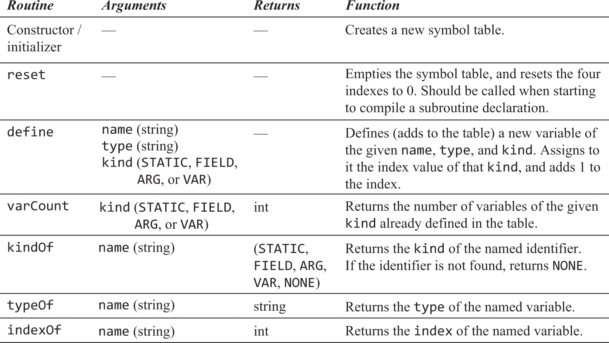
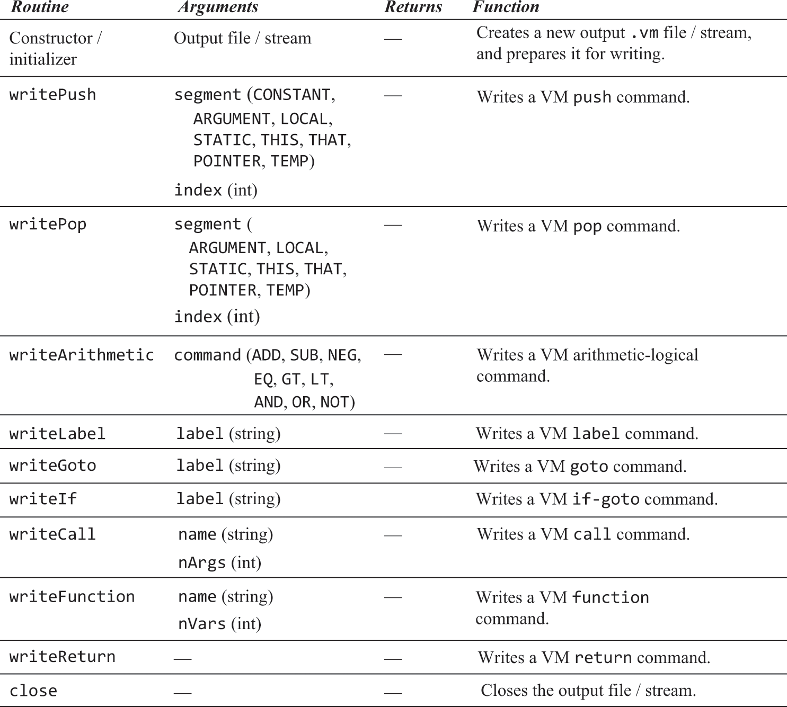
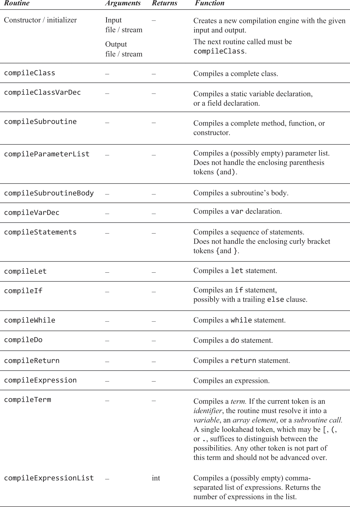

10.1 Compiler Code Generation
When I am working on a problem, I never think about beauty. But when I have finished, if the solution is not beautiful, I know it is wrong. - R. Buckminster Fuller (1895–1993)
Code Generation
- The goal is to convert high level language understood by humans, into low level code understood by computers
Compiling Variables
- All primitive types are 16 bit, so each variable is 1 word long
- Static variables should exist only once during the entirety of the program's life
- Field variables should exist for each object and only during that object's life cycle
- Subroutine variables should exist for each time the routine is called and then freed after it ends
- All of these are handled with the VM memory segments -
static, local, argument, this, that
- All of these are handled with the VM memory segments -
- Managed using a symbol table
Symbol Table
- When the compiler encounters a variable in a high level statement, it needs to know what memory segment it should belong to and what it represents
- These properties can easily be managed using a symbol table
- When a variable is declared in the source code, the compiler allocates the needed VM memory segment and records this mapping in the symbol table
- Whenever a variable is encountered, it's properties are retrieved from this table or if it doesn't exist yet, is added to it
- These variables can exist in multiple scopes and in which they can possess different properties
- Static and field variables are scoped to the class in which they are declared
- Local and arg variables are scoped to the subroutine in which they are declared
- This is achieved using a symbol table for each scope

- Scopes are nested, with inner scopes hiding outer ones
- Variables are searched outwards and if not found, are added to the symbol table in the current scope
- Jack only has two scopes, the subroutine level and the class level, and therefore, only two symbol tables
Variable Declarations
- Compiler Start for Class Declaration:
- Create class-level symbol table.
-
Create subroutine-level symbol table.
-
On Parsing
staticorfieldVariable: - Add to class-level table.
-
Record: variable name, type, kind (
staticorfield), and index within kind. -
On Starting Subroutine Compilation:
- Reset subroutine-level table.
-
If subroutine is a method:
- Add row
<this, className, arg, 0>to subroutine-level table.
- Add row
-
On Parsing
localorargumentVariable: - Add to subroutine-level table.
-
Record: variable name, type, kind (
varorarg), and index within kind. -
Indexing:
- Start index for each kind (
varorarg) at 0. - Increment by 1 for each new variable of that kind added.
Variables in Statements
- Variable in a Statement:
- Compiler first checks subroutine-level symbol table for the variable.
-
If not found, checks class-level symbol table.
-
Variable Found:
- Compiler completes translation of the statement.
Compiling Expressions
- Goal is to convert infix notation (high level) to postfix notation (VM commands)

- Achieved using a simple algorithm that parses an expression from left to right
- Can call itself recursively to handle larger simple expressions

- Full definition:

Compiling Strings
-
Jack’s String Handling:
- When a string constant appears in code:
- Compiler generates code to call
Stringconstructor (creates newStringobject). - Initializes object with characters using
appendCharfor each character.
- Compiler generates code to call
- Can be inefficient and lead to memory leaks.
- When a string constant appears in code:
-
Example:
- Statement:
Output.printString("Loading … please wait"). - Creates a persistent
Stringobject in memory, even if just displaying a message.
- Statement:
-
Comparison with Modern Languages:
- Java, C#, and Python have garbage collection to reclaim memory from unused objects.
- Modern languages employ optimizations and specialized string classes for efficiency.
Compiling Statements
- Jack Statements:
- Includes:
let,do,return,if,while.
Compiling return Statements:
- Call
compileExpressionto evaluate and push expression value to the stack. - Generate VM command
return.
Compiling let Statements:
- Handle form:
let varName = expression. - Process:
- Remember
varName. - Call
compileExpressionto push expression value to stack. - Generate VM command like
pop varName(mapped from symbol table, e.g.,local 3,static 1).
- Remember
- Array handling of
letstatements discussed later in the chapter.
Compiling do Statements:
- Handle form:
do className.functionName(exp1, exp2, … , expn). - Purpose: Call subroutine for effect, disregard return value.
- Recommendation:
- Compile as if the syntax is
do expression. - Call
compileExpression. - Remove topmost stack element using command like
pop temp 0.
- Compile as if the syntax is
- Compilation for other
dostatement forms discussed later (e.g.,do varName.methodName(...),do methodName(...)).
Compiling if and while Statements:
- High-level languages have various control flow statements (like
if,while,for,switch). - Low-level languages (assembly, VM) use primitives like conditional
gotoand unconditionalgoto. -
Challenge: Map high-level control flow to
gotoprimitives. -
Compiler Logic for
ifStatements: - Upon detecting
ifkeyword, the compiler expects:if (expression) {statements} else {statements}. - Start with
compileExpressionto compute and push expression's value. - Use VM command
notto negate the expression's value. - Generate a label (e.g.,
L1) and follow with VM commandif-goto L1. -
Call
compileStatementsto process the sequence of statements (e.g.,let,do,return,if,while). -
Handling Multiple Control Flows:
- Programs have multiple
ifandwhileinstances. -
Compiler generates globally unique labels, using a running counter for distinction.
-
Nested Control Flows:
- Control statements can be nested (e.g.,
ifinsidewhileinside anotherwhile). - Handled by the recursive nature of
compileStatements.

Compiling Objects
-
Object Handling in Object-Oriented Languages:
- Aggregate abstractions named objects.
- Each object: a memory block referenced by static, field, local, or argument variables.
- Reference variable (also object variable or pointer) contains the memory block’s base address.
-
Method Calls on Objects:
- Many objects might exist on the heap.
- Method call format:
p.foo()to call methodfooon objectp. - Inside method, current object referred to as
this. - Method's VM commands referencing
this(e.g.,this 0,this 1) should affect the called object’s fields.
-
VM Mechanism for Object-Method Alignment:
- Virtual machine uses two-valued pointer segment (THIS and THAT) for this alignment.
- Pointer THIS (pointer 0) holds the base address for the memory segment
this. - Align
thissegment with objectpby pushing p’s address to the stack and popping it into pointer 0.
Compiling Constructor Calls
- Introduction to Object Construction in OOP:
- Objects created by constructors.
- Constructors handle both variable declaration (e.g.,
var Point p) and object instantiation (e.g.,let p = Point.new(2,3)). -
Even if done in one statement, the action divides into declaration and construction.
-
Deep Dive into Object Construction:
let p = Point.new(2,3)implies:- Allocation of two-word memory block for a new Point instance.
- Initialization of block words to 2 and 3.
preferences base address of the block.
- Assumptions:
- Constructor knows memory block size.
- Constructor returns the base address of the memory block upon completion.

- Caller declares two object variables.
- Calls a class constructor to construct the objects.
- Constructor allocates memory blocks for objects.
-
Calling code makes object variables reference these memory blocks.
-
Three Key Observations from Figure 11.7:
- Compilation of
let p = Point.new(2,3)andlet p = Point.new(5,7)is standard. What's unique is the implicit object construction. - Physical addresses (6012 and 9543) don't matter to high-level or VM code. Symbolic references (
p1,p2,local 0,local 1) are used, which makes programs relocatable and safer. - During compile-time: symbol table updates and low-level code generates. Object construction and variable binding occur at run-time when the compiled code executes.
- Compilation of
Compiling Constructors
- Overview of Constructor Compilation:
- Constructors seen as black box abstractions so far.
- But a constructor is essentially a subroutine, with special tasks:
- Creates a new object.
- Makes that new object the current object (
this).

-
Creating a New Object:
- Find free RAM block of sufficient size.
- Mark that block as used.
- Tasks outsourced to the host OS.
- OS API
Memory.alloc(size)returns a block’s base address. - Constructor’s task: Use
allocto get memory,deAllocfor release.
-
Determining Size for Memory Allocation:
- Computed from class-level symbol table.
- Example:
Pointclass, withxandy, needs size 2. - Compiler thus pushes
constant 2, then callsMemory.alloc 1for theMemory.alloc(2)function call. - Once memory is allocated, its base address is set as
THISfor the constructor.
-
After Memory Alignment:
- Code generation becomes straightforward.
letstatement example:xmaps tothis 0andaxtoargument 0.- The alignment ensures
push/pop this icommands interact with correct RAM locations.
-
Ending a Constructor:
- Jack specification dictates ending with
return this. - Pushes
THIS, the base address of the object, onto the stack. - In other languages (e.g., Java), while constructors might not explicitly end with
return this, their compiled version performs the same VM-level action. - On constructor termination, the variable from the caller side holds the base address of the newly constructed object.
- Jack specification dictates ending with
Compiling Method Calls
-
Procedural vs. Object-Oriented Methods:
- Procedural (e.g., C-style): Function call syntax like
distance(p1,p2). - Object-Oriented: Method call syntax like
p1.distance(p2).- Methods always operate on a specific object.
- Procedural (e.g., C-style): Function call syntax like
-
Object-Oriented Abstractions:
- Objects are assumed to encapsulate their operations. For instance:
- A
Pointobject can compute its distance to anotherPoint.
- A
- Compilers actualize these high-level abstractions.
- Target VM language doesn't inherently understand objects or methods.
- The compiler translates object-oriented method calls to a procedural style.
- Example:
p1.distance(p2)becomespush p1, push p2, call distance.
- Example:
- Objects are assumed to encapsulate their operations. For instance:
-
Jack's Method Calls:
- Jack supports two kinds of method calls.
- Method calls with a variable name:
- Syntax:
varName.methodName(exp1, exp2, …, expn). - Compile by:
- Push the variable name (after symbol table mapping).
- If no variable name is mentioned, push the mapping of
this. - Call
compileExpressionListwhich in turn callscompileExpressionfor each expression in the parentheses. - Lastly, generate
call className.methodNamewith the number of arguments.
- Argument-less method call special case:
- Translated into
call className.methodName 1. - The
classNameis derived from the symbol table type of thevarName.

Compiling Methods
- Methods, like
distance, are seen from the caller's perspective. - In Java and Jack, methods operate on the "current object" using the
thisidentifier. - It's possible to write methods without explicitly using
this. - In Jack, direct object.field operations aren't supported.
- Fields are accessed via accessor and mutator methods.
- Example: Instead of
x - other.x, Jack usesx - other.getx().
- Jack's compiler identifies fields using symbol tables.
- The current object's representation is the first passed argument.
- In context, the object whose method is being called has its base address as argument 0.
- This abstraction allows methods to be applied to objects in languages like Java, Python, and Jack.
- During compilation:
- A method call looks like
p1.distance(p2). - The callee's compiled code starts by pointing to the object with
push argument 0, thenpop pointer 0. - This sets the method's
THISpointer to the called object's base address. - The
thissegment in the method aligns with the called object's base address. - Commands like
push this 0align correctly with the object's fields. - Expressions translate accordingly, e.g.,
x - other.getx()becomespush this 0, push argument 1, call Point.getx 1, sub. - The
THISalignment guarantees accurate targeting of the object's fields.
- A method call looks like

Compiling Arrays
-
Arrays in Jack:
- Arrays in Jack are treated as objects.
- Implemented as instances of the Array class in the OS.
- Arrays differ from objects due to index-based element access.
-
Compiler Role:
- Translates array abstractions to concrete code.
arr[i]can be represented as a memory address.- Compiler's job: Translate high-level array operations to low-level commands.
-
Compilation Strategy:
- To get the physical address of
arr[i]:push arr,push i,add. - Store the result using
pop pointer 1. - Allows operations like
push that 0andpop x.
- To get the physical address of

-
Flaw in the Strategy:
- Works for expressions like
let x = arr[i]. - Fails for indexed assignments, e.g.,
let arr[i] = x. - Issue: The value in pointer 1 is overridden, losing
a[i]'s address.
- Works for expressions like
-
Solution:
- Generate commands:
push arr,compileExpression,add. - Store the address
(arr + expression1)on the stack. - Save the resulting value (e.g., using
pop temp 0). - This allows operations like
pop pointer 1,push temp 0,pop that 0. - The strategy can handle recursive complexity
- Generate commands:

Implementation
Standard Mapping
Naming Conventions:
- Jack file
Xxx.jackbecomes VM fileXxx.vm. - Subroutine
yyyinXxx.jackis compiled into VM functionXxx.yyy.
Mapping Variables:
- Static variables in class:
static 0,static 1,static 2, ... - Field variables in class:
this 0,this 1,this 2, ... - Local variables in subroutine:
local 0,local 1,local 2, ... - Arguments in function/constructor:
argument 0,argument 1, ... - Arguments in method:
argument 1,argument 2,argument 3, ... (sincearg 0is the base address of the caller)
Mapping Object Fields:
- Use
push argument 0, pop pointer 0to align virtual segmentthiswith the passed object.
Mapping Array Elements:
- Reference
arr[expression]is compiled by settingpointer 1to(arr + expression)and accessingthat 0.
Mapping Constants:
- Jack's
nullandfalse:push constant 0. - Jack's
true:push constant 1, neg(pushes value -1 to the stack). - Jack's
this:push pointer 0(pushes the base address of the current object).
Implementation Guidelines
Handling Identifiers:
- Use symbol tables for naming variables.
- Any identifier not in the symbol tables is likely a subroutine or a class name.
Compiling Expressions:
- The
compileExpressionroutine processes input in the sequence:term op term op term .... - Use the
codeWritealgorithm, enhanced to handle all terms from the Jack grammar. - Most compilation action happens during the compilation of underlying terms.
- Subroutine calls should be managed by the compilation of terms.
- The expression grammar and its corresponding routine are recursive.
- If a left parenthesis is detected,
compileExpressionshould recursively call itself for the inner expression.
- If a left parenthesis is detected,
- Jack supports no operator priority, except the priority rule.
- e.g., For parentheses, evaluate the inner expression first.
-
Handling operator priority is an optional compiler-specific extension, not a standard Jack feature.
-
Compilation Examples:
- Expression
x * y: Compile topush x, push y, call Math.multiply 2. - Expression
x / y: Compile topush x, push y, call Math.divide 2.
- Expression
Compiling Strings:
- String constant "ccc … c" is managed by:
i. Pushing string length on stack and calling the
String.newconstructor. ii. Pushing character code of c on stack and invokingString.appendCharfor each character.- The
newconstructor andappendCharmethod push the string object back onto the stack.
- The
Compiling Function Calls and Constructor Calls:
- For functions/constructors with n arguments:
i. Call
compileExpressionList(which will callcompileExpressionn times). ii. Make the call, indicating n arguments were pushed.
Compiling Method Calls:
- For methods with n arguments:
i. Push a reference to the object the method operates on.
ii. Call
compileExpressionList(callingcompileExpressionn times). iii. Make the call, noting arguments were pushed.
Compiling do Statements:
- Treat
do subroutineCallasdo expressionand remove the top stack value usingpop temp 0.
Compiling Classes:
- On class compile start, initialize class-level symbol table with field and static variables. Also, create an empty subroutine-level symbol table.
Compiling Subroutines:
- Initialize the subroutine’s symbol table.
- If a method, map
in the table. - Add parameters and local variables to the table.
- Start generating code with the
function className.subroutineName nVarscommand. - If it's a method, generate code to align the 'this' segment with the object base address.
Compiling Constructors:
- Perform actions as in subroutine compilation.
- Generate code for memory allocation and alignment.
- The constructor ends by returning the new object's base address.
Compiling Void Methods and Void Functions:
- VM functions should push a value onto the stack before returning.
- Void methods/functions end with
push constant 0, return.
Compiling Arrays:
- Statements like
let arr[expression1] = expression2are compiled as described earlier - There's no need to use 'that' entries with an index greater than 0 when dealing with arrays.
Software Architecture
JackCompiler: main program, sets up and invokes the other modulesJackTokenizer: tokenizer for the Jack languageSymbolTable: keeps track of all the variables found in the Jack codeVMWriter: writes VM codeCompilationEngine: recursive top-down compilation engine
Symbol Table

VMWriter

CompilationEngine

Examples


- Be sure to add this as
arg 0for methods, this is also why the actual arguments are offset 1 more than if they were in a function

- Its the second option.


- Arg 0 always refers to the object itself when calling a method, this allows you to access local field variables through the this keyword

- For the constructor, we call the mem alloc function with the size of the class (1 in this case because we have 1 field variable)
- Then we push the initial variables in that object, push the pointer to the object back on the stack and return it


- Wrong class name
- Need to say whether static or field
- Need to add function or method before declaration

int "43", name "bobis50", int "99", name "balloons"